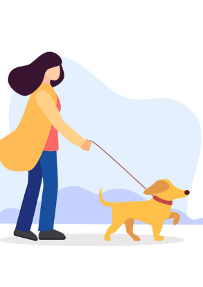
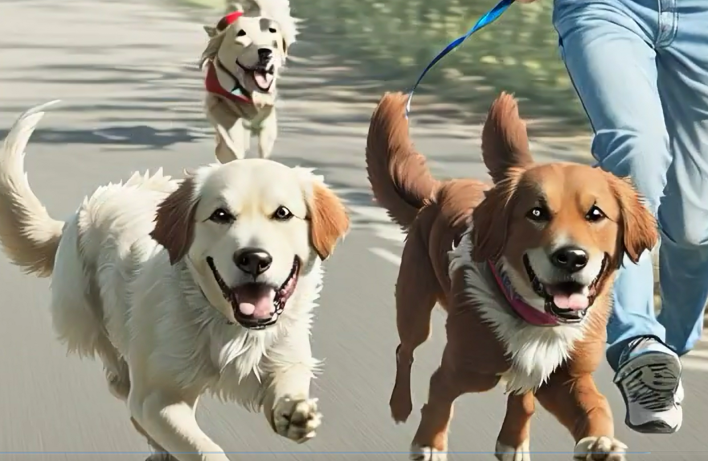
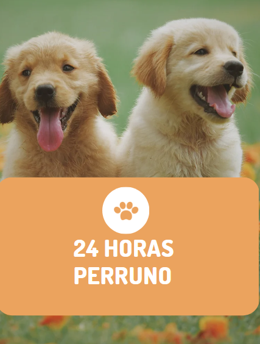

Paseante
Si no tienes tiempo para sacar a tu perro a pasear todos los días, un cuidador puede hacerlo por ti.
"Los cuidadores se asegurarán de que tu perro hagan suficiente ejercicio y esté bien atendido mientras tú estes ocupado."

Veterinario
Si no puedes llevar a tu perro al veterinario por tu cuenta debido a tus horarios ocupados, un cuidador puede hacerlo por ti.
"Los cuidadores pueden llevar a tu perro a la clínica veterinaria y asegurarse de que tu perro esté cómodo y seguro durante su visita."
Peluqueria
Si contratas a un cuidador a través de la aplicación, tendrás la opción de que lleve a tu perro a la peluquería.
"El cuidador se encargará de todo, lo que significa que no tendrás que preocuparte por hacer tiempo en tu agenda para llevar a tu perro a la peluquería y recogerlo después."

24 horas
Si no quieres dejar a tu perro solo en casa durante todo el día, un cuidador puede quedarse en tu hogar y cuidar a tu perro.
"Tu perro tendrá compañía y atención constante mientras tú estás fuera, y no tendrás que preocuparte por su seguridad y bienestar."